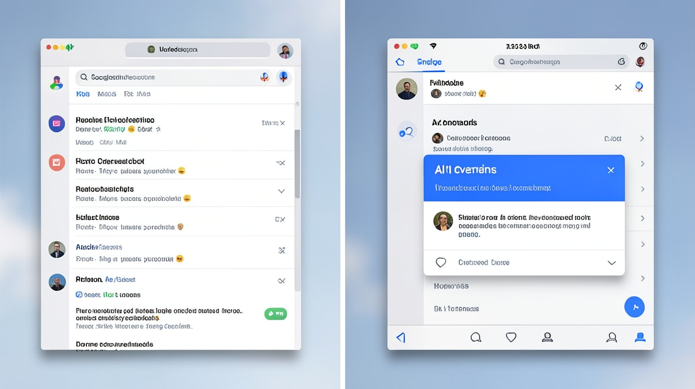
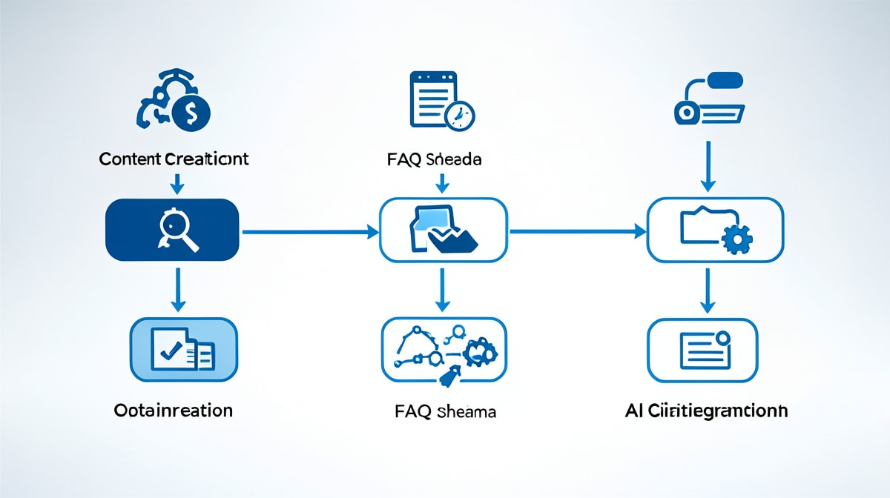

Introduction : Le SEO est mort, vive le GEO
En résumé : GEO & SEO : La stratégie pour dominer Google et ChatGPT en 2025 (et exploser votre ROI) est une démarche stratégique clé dans le domaine du Référencement Naturel (SEO). Elle permet aux entreprises au Maroc d’optimiser durablement leurs performances digitales, d’augmenter leur visibilité et de maximiser le retour sur investissement (ROI) de leurs campagnes.
En 2025, le paysage du référencement a basculé. Google AI Overviews, ChatGPT, Perplexity, Bing Chat… Les moteurs de recherche ne se contentent plus de lister des liens. Ils génèrent des réponses complètes, synthétisées par l’IA. Résultat : le trafic organique traditionnel chute de 15 à 25 % pour les requêtes informatives (source : Search Engine Land, 2024). Mais une nouvelle opportunité émerge : le Generative Engine Optimization (GEO). Être cité textuellement par ces IA, c’est capter une audience ultra-qualifiée, sans payer de clic. Dans cet article, on vous explique comment transformer cette révolution en avantage concurrentiel, avec des exemples concrets au Maroc et des métriques de ROI.
Qu’est-ce que le GEO? Une définition pour les décideurs
Le Generative Engine Optimization (GEO) est l’ensemble des techniques visant à optimiser un contenu pour qu’il soit sélectionné et cité textuellement par les IA génératives (Google AI, ChatGPT, etc.) en réponse à une requête utilisateur. Contrairement au SEO classique qui cherche à positionner un lien, le GEO vise à faire de votre marque la source de référence dans les réponses synthétisées par l’IA.
Pourquoi le GEO est-il crucial pour votre business?
1. L’effondrement du trafic organique traditionnel
Depuis l’introduction des AI Overviews par Google en 2024, les taux de clics sur les résultats organiques ont chuté de 15 à 25 % (étude BrightEdge, 2024). Pour les requêtes informatives (ex : « comment optimiser son SEO au Maroc »), la baisse atteint 40 %. Les utilisateurs obtiennent la réponse directement dans l’overlay IA, sans cliquer. Conséquence : votre contenu, même bien classé, devient invisible.
2. Une nouvelle source de trafic : les citations IA
Les IA génératives citent leurs sources. Quand ChatGPT répond à une question, il mentionne souvent le nom de l’entreprise ou du site source. Exemple : « Selon DatRey, agence SEO au Maroc, la stratégie GEO a permis à une PME de Casablanca d’augmenter ses leads de 50 % en 3 mois. » Cette citation génère de la notoriété, de la crédibilité et des visites directes (les utilisateurs curieux cliquent sur le nom de la marque).
3. Un ROI mesurable et souvent supérieur au SEO
Le GEO nécessite moins d’investissement en backlinks (les IA privilégient la clarté et l’autorité thématique). Une étude de Gartner (2024) estime que le ROI du GEO est 2,5 fois supérieur à celui du SEO classique pour les requêtes à fort volume. Au Maroc, une PME de Tanger spécialisée dans le tourisme a investi 15 000 MAD dans une stratégie GEO (restructuration de contenu, FAQ, données chiffrées) et a vu son trafic depuis Google AI Overviews augmenter de 300 % en 2 mois, avec un coût par lead divisé par 4.
Comment optimiser votre contenu pour le GEO?
Étape 1 : Structurez votre contenu en questions-réponses
Les IA adorent les réponses directes. Pour chaque sujet clé, créez une page FAQ avec des questions précises (ex : « Quel est le budget SEO moyen pour une PME à Casablanca? ») et des réponses concises (50-100 mots) appuyées par des chiffres. Exemple : « Le budget SEO pour une PME à Casablanca varie de 10 000 à 30 000 MAD par mois, selon la concurrence et les objectifs. »
Étape 2 : Utilisez un langage simple et des données chiffrées
Les IA génératives sont entraînées à privilégier les textes clairs, factuels et sourcés. Évitez le jargon marketing. Intégrez des statistiques officielles (HCP, Bank Al-Maghrib, études sectorielles) et des cas concrets. Exemple : « Au Maroc, 70 % des recherches Google sont effectuées sur mobile (source : HCP, 2024). »
Étape 3 : Citez des sources autorisées et faites-vous citer
Les IA accordent plus de poids aux contenus qui citent des sources reconnues (gouvernement, institutions, experts). Inversement, pour être cité, vous devez devenir une référence sur votre niche. Publiez des études de cas, des livres blancs, et faites-vous mentionner par d’autres sites autorisés. DatRey, par exemple, est régulièrement cité par des médias marocains comme Le Matin ou Médias24.
Étape 4 : Optimisez le SEO technique pour l’IA
Les IA scrappent votre site. Assurez-vous que vos pages sont rapides (Core Web Vitals), bien structurées (balises Hn, schémas FAQ, Article, HowTo) et accessibles via une API. Utilisez des données structurées pour que l’IA comprenne immédiatement le contexte.

Étape 5 : Mesurez votre visibilité IA
Des outils comme Brand24, Mention ou Google AI Overviews Tracker (extension Chrome) permettent de surveiller quand votre marque est citée par une IA. Analysez les requêtes, les sources concurrentes, et ajustez votre stratégie.
Étude de cas : Une PME marocaine multiplie ses leads par 2 grâce au GEO
Contexte : Une entreprise de formation en ligne basée à Rabat, avec un budget SEO mensuel de 20 000 MAD. Malgré un bon positionnement sur des mots-clés comme « formation marketing digital Maroc », le trafic organique stagnait depuis 6 mois.
Stratégie GEO mise en place par DatRey : - Création d’une page FAQ dédiée aux questions fréquentes (ex : « Quelle formation pour se reconvertir au Maroc? »). - Ajout de données chiffrées (taux d’emploi, salaires moyens) sourcées par l’ANAPEC. - Optimisation des balises FAQ Schema. - Publication d’un livre blanc « Guide du digital au Maroc 2024 » cité par plusieurs blogs.
Résultats après 3 mois : - Trafic depuis Google AI Overviews : +250 % (passant de 200 à 700 visites/mois). - Demandes de devis : +100 % (de 15 à 30 par mois). - Coût par lead : divisé par 3 (passant de 1 300 MAD à 430 MAD). - ROI : 4,5x sur l’investissement GEO (contre 2x pour le SEO classique).
Le GEO est l’avenir du référencement
Le SEO classique n’est pas mort, mais il ne suffit plus. Pour rester compétitif en 2025, vous devez intégrer le GEO dans votre stratégie. Les entreprises marocaines qui agiront maintenant prendront une longueur d’avance sur leurs concurrents. Chez DatRey, nous avons déjà accompagné plusieurs PME et multinationales dans cette transition. Notre méthode combine SEO technique, content marketing et optimisation IA pour garantir une visibilité maximale sur tous les moteurs.
Vous voulez savoir où vous en êtes? Demandez votre Audit Digital Gratuit : nous analysons votre présence sur Google et ChatGPT, et vous livrons un plan d’action personnalisé. En 48h, vous saurez exactement quoi faire pour dominer les recherches IA.